Power BI · 9 dashboards
Power BI · DAX · SharePoint · BIM 360 / ACC · Revizto
A suite of automated Power BI dashboards and reporting pipelines built for BIM coordination, covering model health, clash detection, open issues, ACC administration, resourcing and team-level assessment.
Each dashboard reads directly from project data and refreshes on a schedule, so coordination status is current without anyone assembling a report. Deployed as project-specific intelligence hubs on SharePoint.
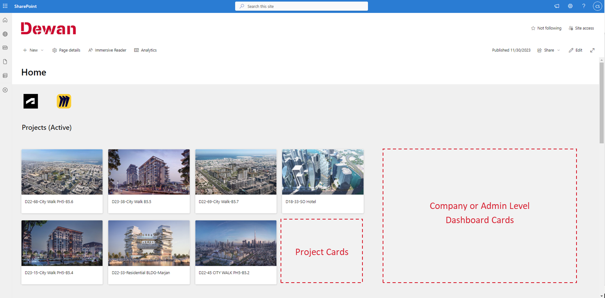
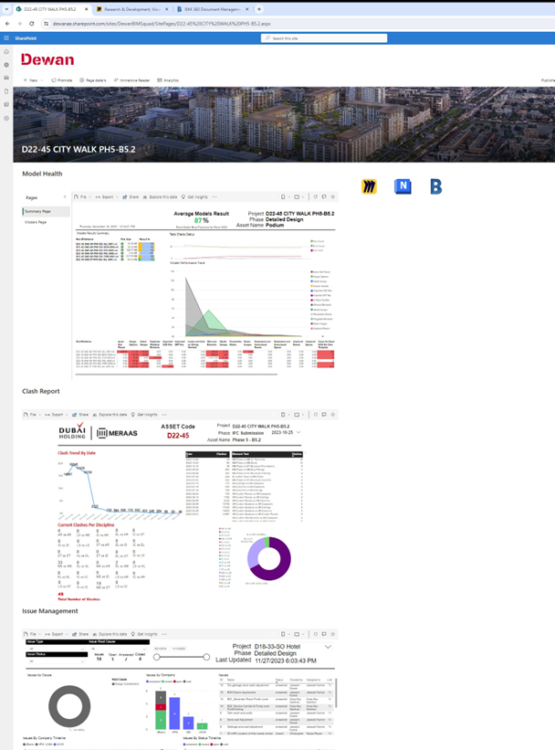
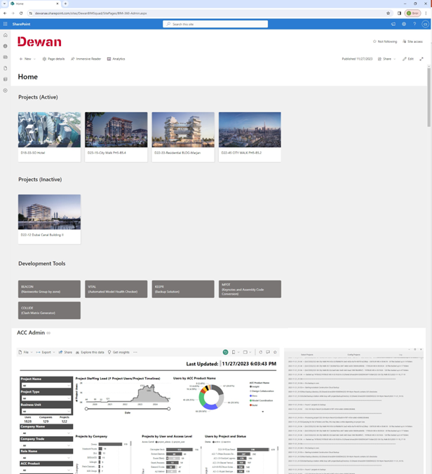
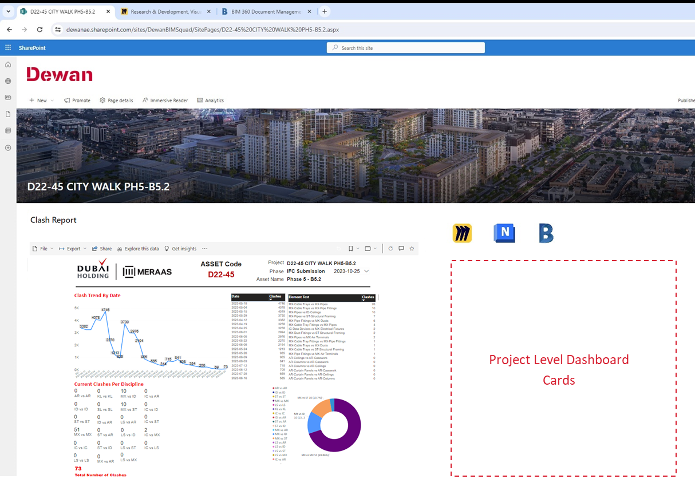
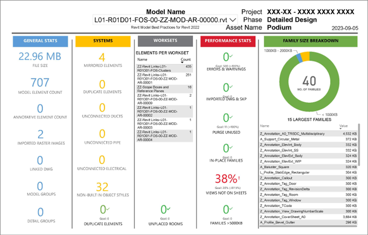
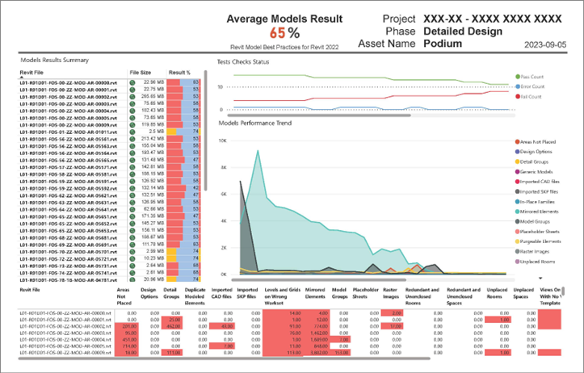
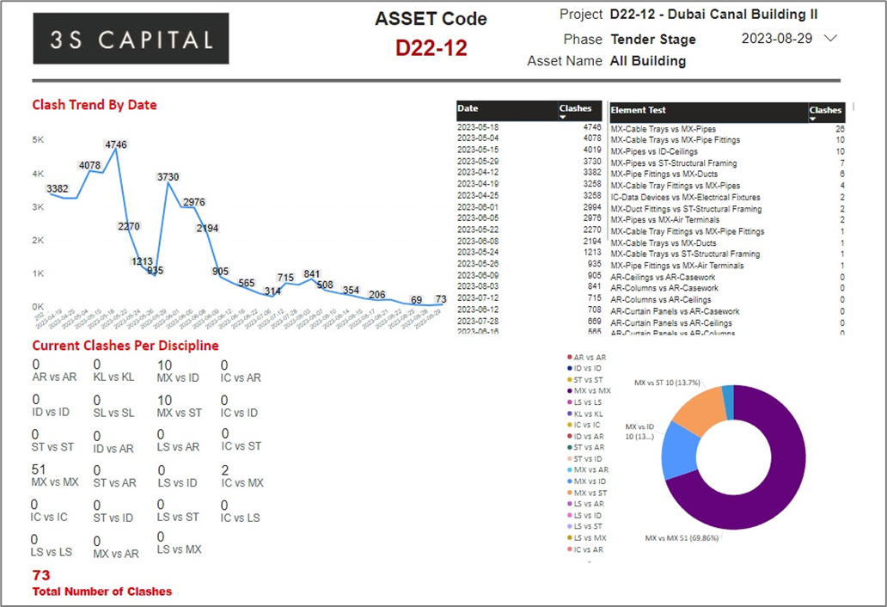
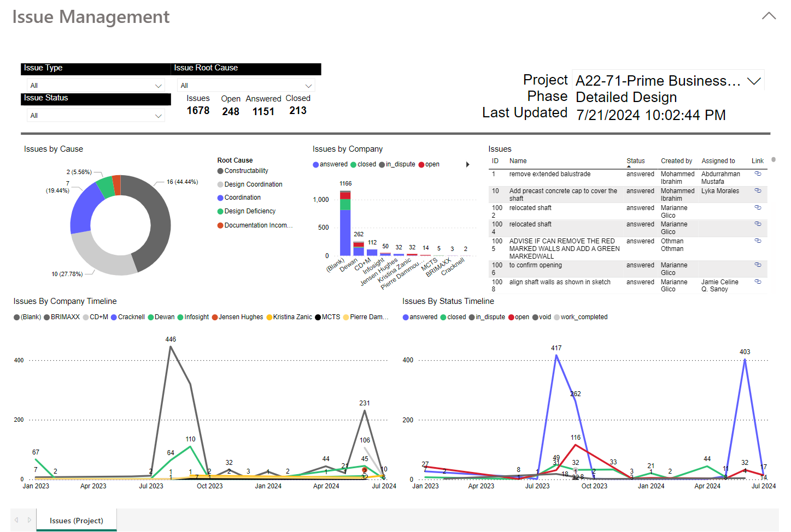
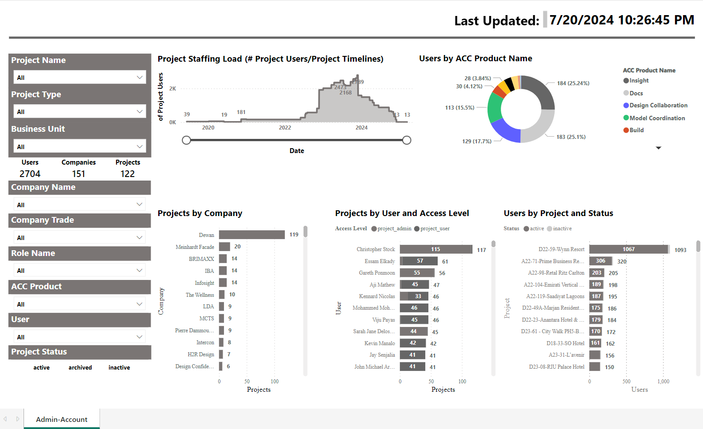
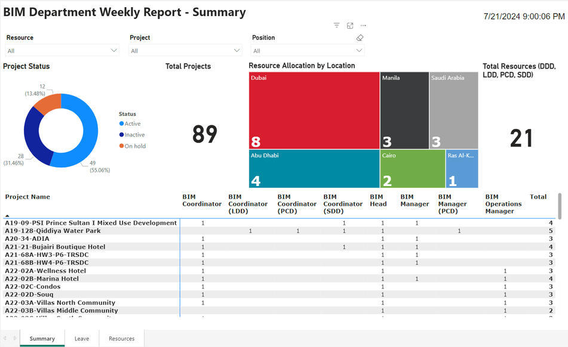
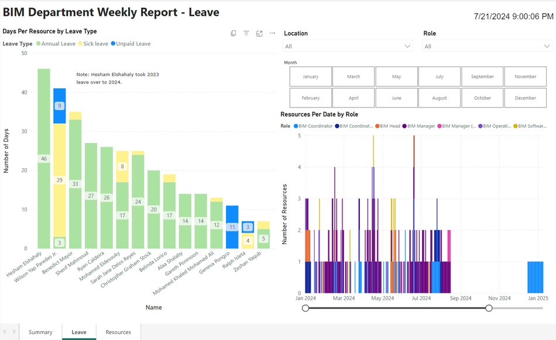
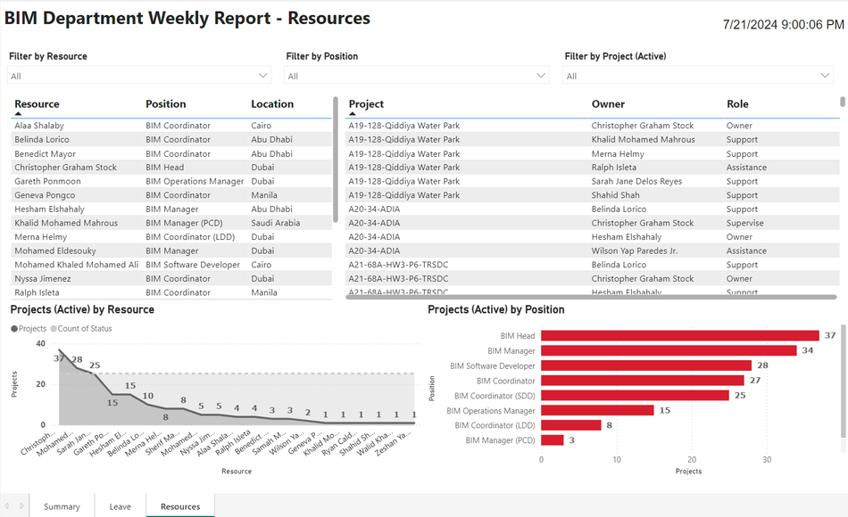
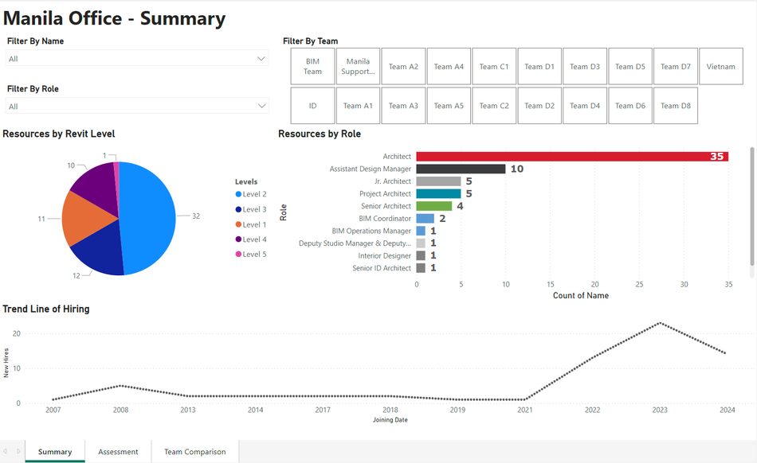
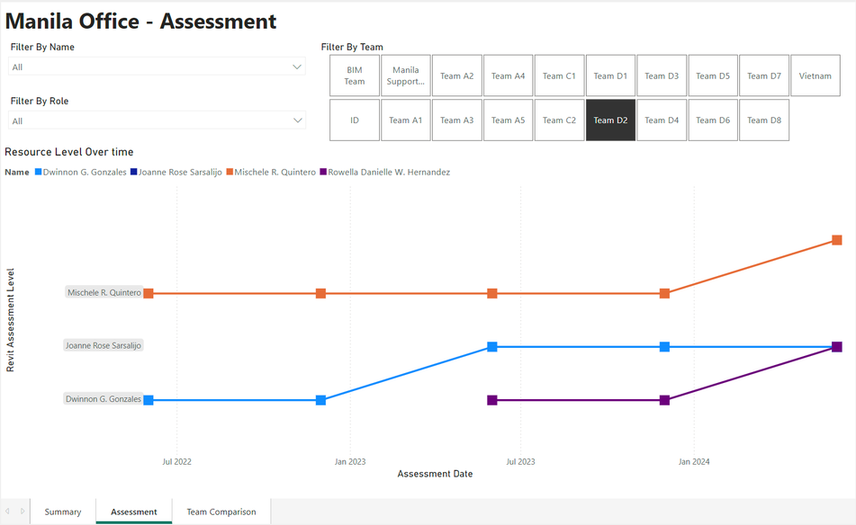
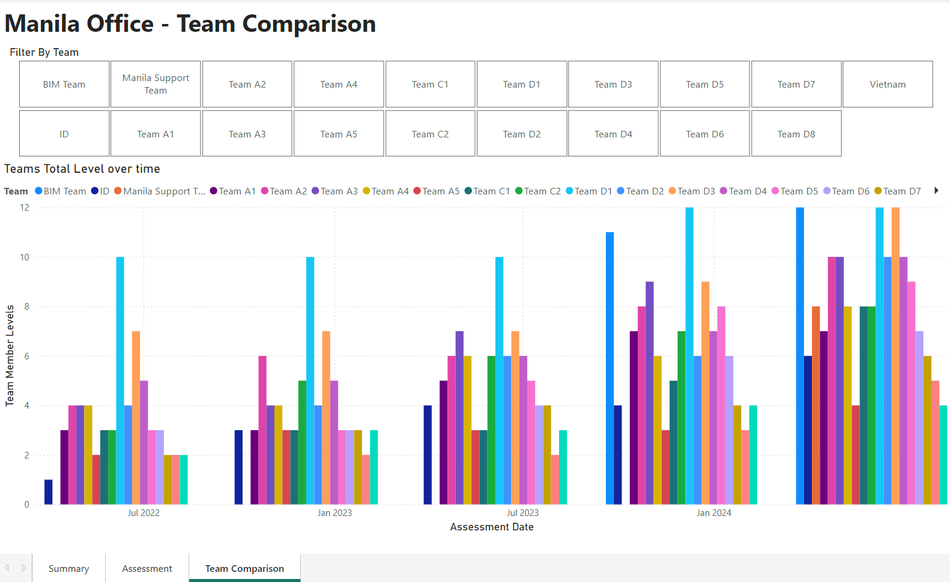